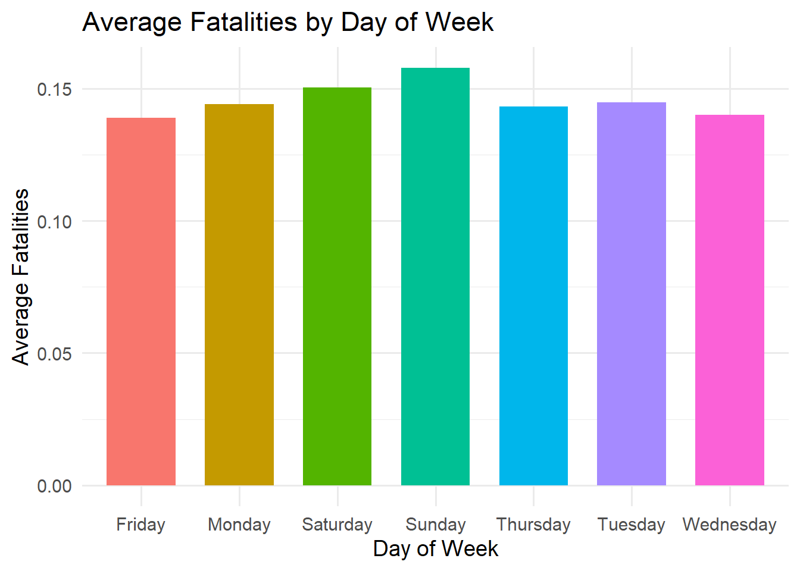
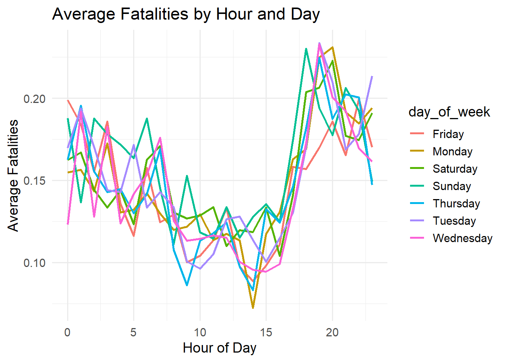
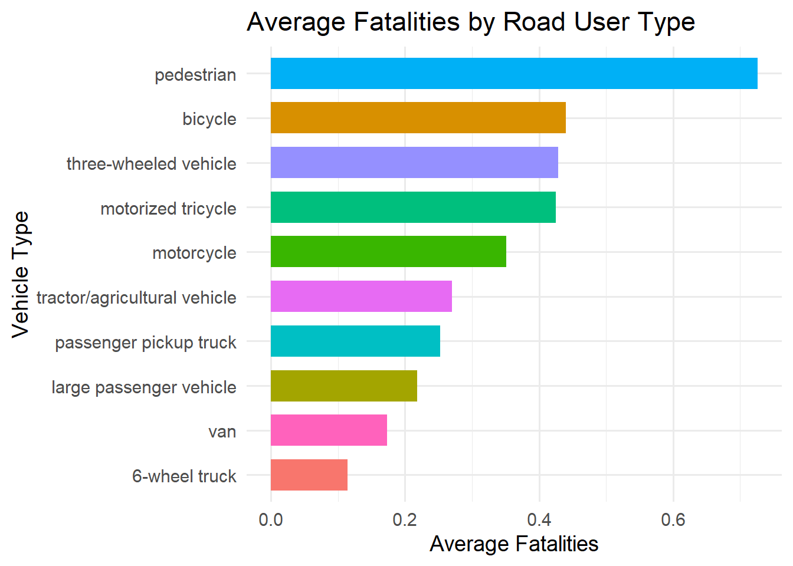
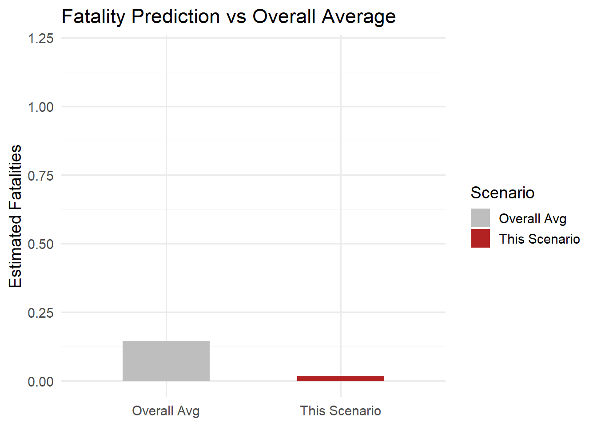

accident_data <- read_csv("data/thai_road_accident_2019_2022.csv", show_col_types = FALSE)Take-home_Exercise 3
Thailand Road Accidents: Visual Exploration and Predictive Modeling
1. Overview
This project focuses on analyzing road accident data in Thailand from 2019 to 2022. With thousands of incidents recorded across various provinces, weather conditions, vehicle types, and times of day, the goal is to gain meaningful insights into when and where fatal accidents are more likely to occur.
The analysis combines exploratory visualizations with a predictive model to understand patterns and estimate the number of fatalities under different accident scenarios. A final prototype in the form of a Shiny app was developed to allow interactive simulations of fatality risk.
2. Objective
The main objective of this exercise is to build a standalone predictive module that takes user input — such as location, time, weather, and vehicle type — and returns an estimate of the expected number of fatalities using Poisson regression.
In addition, the project aims to:
Explore temporal and regional patterns of accidents using visual analytics
Identify high-risk vehicle types and conditions
Develop a user-friendly interface to simulate and visualize fatality predictions
3. Data Preparation
Used the following R packages in this project and loaded them using the pacman::p_load() function for convenience:
shiny: For building interactive web applications.
tidyverse: A collection of packages for data wrangling and visualization, including
dplyr,ggplot2, andreadr.leaflet: To build interactive geospatial heatmaps for province-level accident data.
3.2 Data Source
The dataset was originally collected from Kaggle, which compiles official accident data released by Thai government agencies. It contains accident records between 2019 and 2022, including variables such as:
province_en: Province where the accident occurred
vehicle_type: Type of vehicle involvedweather_condition: Weather at the time of the accidentincident_datetime: Timestamp of the incidentnumber_of_vehicles_involved: Total number of vehiclesnumber_of_fatalities: Fatalities resulting from the accident
3.3 Data Overview & Pre-processing
3.3.1Import Data
3.3.2 Data Overview
This output from glimpse(accident_data) provides a summary of the dataset’s structure, offering an overview of the number of rows, columns, and the types of variables included.
glimpse(accident_data)Rows: 81,735
Columns: 18
$ acc_code <dbl> 571905, 3790870, 599075, 571924, 599523, 5…
$ incident_datetime <date> 2019-01-01, 2019-01-01, 2019-01-01, 2019-…
$ report_datetime <date> 2019-01-02, 2020-02-20, 2019-01-01, 2019-…
$ province_th <chr> "ลพบุรี", "อุบลราชธานี", "ประจวบคีรีขันธ์", "เชียงใ…
$ province_en <chr> "Loburi", "Ubon Ratchathani", "Prachuap Kh…
$ agency <chr> "department of rural roads", "department o…
$ route <chr> "แยกทางหลวงหมายเลข 21 (กม.ที่ 31+000) - บ้านวั…
$ vehicle_type <chr> "motorcycle", "private/passenger car", "mo…
$ presumed_cause <chr> "driving under the influence of alcohol", …
$ accident_type <chr> "other", "rollover/fallen on straight road…
$ number_of_vehicles_involved <dbl> 1, 1, 2, 1, 1, 1, 2, 2, 2, 2, 1, 1, 1, 1, …
$ number_of_fatalities <dbl> 0, 0, 1, 0, 0, 0, 0, 1, 3, 0, 0, 1, 0, 0, …
$ number_of_injuries <dbl> 2, 2, 0, 1, 0, 2, 2, 0, 0, 1, 1, 0, 1, 1, …
$ weather_condition <chr> "clear", "clear", "clear", "clear", "clear…
$ latitude <dbl> 14.959105, 15.210738, 12.374259, 18.601721…
$ longitude <dbl> 100.87346, 104.86269, 99.90795, 98.80420, …
$ road_description <chr> "straight road", "straight road", "wide cu…
$ slope_description <chr> "no slope", "no slope", "slope area", "no …3.2 Pre-processing
accident_data <- read_csv("data/thai_road_accident_2019_2022.csv", show_col_types = FALSE) %>%
mutate(
incident_datetime = as.POSIXct(incident_datetime),
day_of_week = weekdays(incident_datetime),
hour = as.integer(format(incident_datetime, "%H"))
) %>%
drop_na(number_of_fatalities, province_en, vehicle_type,
weather_condition, number_of_vehicles_involved,
day_of_week, hour) %>%
mutate(
province_en = factor(province_en),
vehicle_type = factor(vehicle_type),
weather_condition = factor(weather_condition),
day_of_week = factor(day_of_week)
)I converted the timestamp to POSIXct format and extracted day_of_week and hour for temporal analysis. Then, I removed rows with missing values in key variables and converted categorical fields to factors for modeling compatibility.
4. Thailand Road Accidents: Visual Exploration and Predictive Modeling
4.1 Heatmap of Average Fatalities by Province
To explore the geographic distribution of road accident severity, I created a heatmap that visualizes the average number of fatalities per province in Thailand. This visualization helps highlight provinces with higher fatality rates, allowing for better understanding of regional accident patterns.
The heatmap was built using the leaflet package. Provinces are represented by circular markers, where:
Radius indicates the magnitude of average fatalities (larger circle = higher fatality).
Color intensity (from light to dark red) represents the severity.
Interactive popups provide province names and average fatality values.
4.1.1 Step 1: Prepare Summary Data with Coordinates
#Calculate average fatalities per province
province_summary <- accident_data %>%
group_by(province_en) %>%
summarise(
avg_fatalities = mean(number_of_fatalities),
.groups = "drop"
) %>%
# Add lat/lon for each province
mutate(
lat = case_when(
province_en == "Bangkok" ~ 13.7563,
province_en == "Chiang Mai" ~ 18.7883,
province_en == "Phuket" ~ 7.8804,
province_en == "Udon Thani" ~ 17.4138,
province_en == "Khon Kaen" ~ 16.4419,
province_en == "Nakhon Ratchasima" ~ 14.9799,
province_en == "Chon Buri" ~ 13.3611,
province_en == "Songkhla" ~ 7.1897,
TRUE ~ NA_real_
),
lon = case_when(
province_en == "Bangkok" ~ 100.5018,
province_en == "Chiang Mai" ~ 98.9853,
province_en == "Phuket" ~ 98.3923,
province_en == "Udon Thani" ~ 102.7859,
province_en == "Khon Kaen" ~ 102.8350,
province_en == "Nakhon Ratchasima" ~ 102.0977,
province_en == "Chon Buri" ~ 100.9847,
province_en == "Songkhla" ~ 100.5954,
TRUE ~ NA_real_
)
) %>%
drop_na(lat, lon) In this step, I calculated the mean number of fatalities per province and manually assigned latitude and longitude values for selected provinces. This allowed accurate placement of markers on the map.
4.1.2 Step 2: Create Interactive Heatmap
pal <- colorNumeric(
palette = "Reds",
domain = province_summary$avg_fatalities
)
# visualization
leaflet(province_summary) %>%
addTiles() %>%
addCircleMarkers(
~lon, ~lat,
radius = ~sqrt(avg_fatalities) * 50,
color = ~pal(avg_fatalities),
stroke = FALSE,
fillOpacity = 0.8,
popup = ~paste0(
"<strong>", province_en, "</strong><br>",
"Avg Fatalities: ", round(avg_fatalities, 2)
)
) %>%
addLegend(
"bottomright",
pal = pal,
values = ~avg_fatalities,
title = "Avg Fatalities",
opacity = 1
)4.2 Average Fatalities by Day of Week
To verify potential temporal patterns in road fatalities, I plotted the average fatalities by day of the week. The graph shows if weekends or weekdays are more prone to fatal accidents.
The chart below shows that Sunday and Saturday have relatively higher average fatalities, which suggests heightened danger during weekends—likely due to higher traffic volume or longer travel distance during leisure times.
accident_data <- accident_data %>%
mutate(
incident_datetime = as.POSIXct(incident_datetime),
day_of_week = weekdays(incident_datetime),
hour = as.integer(format(incident_datetime, "%H"))
) %>%
drop_na(number_of_fatalities, province_en, vehicle_type,
weather_condition, number_of_vehicles_involved,
day_of_week, hour)
#Average Fatalities by Day of Week
accident_data %>%
group_by(day_of_week) %>%
summarise(avg_fatalities = mean(number_of_fatalities), .groups = "drop") %>%
ggplot(aes(x = day_of_week, y = avg_fatalities, fill = day_of_week)) +
geom_col(width = 0.7, show.legend = FALSE) +
labs(title = "Average Fatalities by Day of Week",
x = "Day of Week", y = "Average Fatalities") +
theme_minimal(base_size = 14)
4.3 Average Fatalities by Hour and Day
This line plot shows how the average number of fatalities varies throughout the day for each day of the week. By incorporating both dayof week and hour of day, the graph shows temporal patterns that canbe linked to traffic volume, human activity, or enforcement time of regulations.
We can observe two main peaks in the evening (around 18:00 to 21:00), especially on weekends, which may reflect higher accident risk due to increased social activity or tiredness. Early morning hours also show relatively higher fatalities on certain days.
accident_data %>%
group_by(day_of_week, hour) %>%
summarise(avg_fatalities = mean(number_of_fatalities), .groups = "drop") %>%
ggplot(aes(x = hour, y = avg_fatalities, color = day_of_week)) +
geom_line(size = 1) +
labs(
title = "Average Fatalities by Hour and Day",
x = "Hour of Day",
y = "Average Fatalities"
) +
theme_minimal(base_size = 14)
4.4 Average Fatalities by Road User Type
This chart shows the average number of fatalities per crash by roaduser type. By examining which groups have more fatalities, we can determine vulnerable road user groups and direct safety measures.
The following bar chart shows the top 10 vehicle types (including pedestrians) with the highest average fatalities. Notably, pedestrians and bicycle crashes are among the most fatal on average.
accident_data %>%
group_by(vehicle_type) %>%
summarise(avg_fatalities = mean(number_of_fatalities), .groups = "drop") %>%
slice_max(avg_fatalities, n = 10) %>% # Select top 10 for better readability
ggplot(aes(x = reorder(vehicle_type, avg_fatalities), y = avg_fatalities, fill = vehicle_type)) +
geom_col(width = 0.7, show.legend = FALSE) +
coord_flip() +
labs(
title = "Average Fatalities by Road User Type",
x = "Vehicle Type",
y = "Average Fatalities"
) +
theme_minimal(base_size = 14)
4.5 Predictive Modeling using Poisson Regression
This part builds a predictive model based on Poisson regressionsuitable for count target variables like the number of fatalities. It trains the model on significant accident variables to estimate expected fatalities in a given situation.
# Load dataset and preprocess
accident_data <- read_csv("data/thai_road_accident_2019_2022.csv", show_col_types = FALSE) %>%
mutate(
incident_datetime = as.POSIXct(incident_datetime),
day_of_week = weekdays(incident_datetime),
hour = as.integer(format(incident_datetime, "%H"))
) %>%
drop_na(number_of_fatalities, province_en, vehicle_type,
weather_condition, number_of_vehicles_involved,
day_of_week, hour) %>%
mutate(
province_en = factor(province_en),
vehicle_type = factor(vehicle_type),
weather_condition = factor(weather_condition),
day_of_week = factor(day_of_week)
)4.5.1 Train Model
To estimate the number of fatalities, I trained a Poisson regression model using the glm() function. The target variable is number_of_fatalities, and the predictors include location, vehicle type, weather, time, and number of vehicles involved.
model <- glm(number_of_fatalities ~ province_en + vehicle_type +
weather_condition + day_of_week + hour + number_of_vehicles_involved,
family = poisson(), data = accident_data)4.5.2 Scenario Prediction and Interpretation
A hypothetical accident scenario is created using the following values:
Province: Bangkok
Vehicle Type: Private/Passenger Car
Weather: Clear
Day: Monday
Hour: 14
Number of Vehicles Involved: 2
newdata <- data.frame(
province_en = factor("Bangkok", levels = levels(accident_data$province_en)),
vehicle_type = factor("private/passenger car", levels = levels(accident_data$vehicle_type)),
weather_condition = factor("clear", levels = levels(accident_data$weather_condition)),
day_of_week = factor("Monday", levels = levels(accident_data$day_of_week)),
hour = 14,
number_of_vehicles_involved = 2
)
pred <- predict(model, newdata = newdata, type = "response")
avg_pred <- mean(predict(model, type = "response"), na.rm = TRUE)
comparison <- ifelse(pred > avg_pred, "higher than", "lower than")
summary_text <- paste0("Predicted: ", round(pred, 3),
" (", comparison, " avg: ", round(avg_pred, 3), ")")
summary_text[1] "Predicted: 0.017 (lower than avg: 0.146)"
Note
The model returns an estimated fatality count for the defined scenario and compares it with the overall average. The result allows the user to understand whether this scenario poses a higher or lower risk compared to typical cases.
4.5.3 Visualizing the Prediction
The chart below compares the predicted value for the given scenario against the overall average:
bar_data <- tibble(
Scenario = c("This Scenario", "Overall Avg"),
Value = c(pred, avg_pred)
)
ggplot(bar_data, aes(x = Scenario, y = Value, fill = Scenario)) +
geom_col(width = 0.5) +
labs(title = "Fatality Prediction vs Overall Average",
y = "Estimated Fatalities", x = NULL) +
theme_minimal(base_size = 14) +
scale_fill_manual(values = c("This Scenario" = "firebrick", "Overall Avg" = "gray")) +
ylim(0, max(1, pred, avg_pred) * 1.2)
The model estimates approximately 0.017 fatalities for this situation, which is lower than the overall average of 0.146 across all accidents.
This suggests that the specified conditions (time, location, weather, and vehicle type) are relatively less severe compared to other combinations observed in the dataset. It demonstrates the model’s capability to provide data-driven risk estimation under customized inputs.
5. Key Takeaways
Predictive model provides interpretable results based on user input
Visual context improves understanding of scenario-based risks
Shiny allows for fast prototyping and feedback-driven development
6. Future Work
Integrate module into full team project
Extend model to include severity levels or accident types
Refine geospatial accuracy for heatmap with real coordinates
7. Prototype Design (Shiny App – Predictive Analysis Module)
This Shiny application provides an interactive interface for users to estimate the expected number of fatalities under different traffic accident scenarios using a trained Poisson regression model.
The following R packages from CRAN are required to build and run this Shiny application module:
- shiny: For building the interactive web application
- tidyverse: A collection of packages used for data manipulation and visualization, including
dplyr,ggplot2, andreadr
All packages are supported by CRAN and can be installed via:
Note
install.packages(c(“shiny”, “tidyverse”))
Inputs
Province
Vehicle Type
Weather Condition
Day of Week
Hour
Number of Vehicles Involved
Outputs
Predicted fatality count
Risk summary text (relative to overall average)
Bar chart: predicted value vs. overall average

8. Appendix
Reference Dashboards and Storyboards